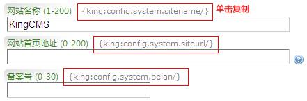

标签是把复杂的PHP语言转换为容易编写和容易记忆的另一种形式的语言。
KingCMS标签和HTML标签有异曲同工之处，写起来就像HTML代码一样简单，也很容易掌握。
KingCMS标签是以大括号括起来，和模板HTML代码做区分。见下面的对照表：
| HTML标签 | KingCMS标签 |
| <br/> | {King:Title/} |
| <img src="images/logo.gif" alt="图片" /> | {King:Title size="3" /} |
| <span class="cls" > KingCMS</span> | {king:portal.article listid='3'} {king:title/} {/king:portal.article} |
{king:TAG size="18"/}/*必须以 /} 结束，若少了 /，则不会被解析。*/
{king:TAG ATTRIB='VALUE'}/*VALUE值可以用双引号，也可以用单引号*/
____INNER/*循环显示部分*/
{/king:TAG}/*结束标记，必须和开始标记大小写一致，前面加个/*/
用做调用各模块下面的language/LANG.xml语言包中的内容。格式如：
{Lang:system.common.submit /}
其中，lang代表是语言标签，system是代表system模块，common.submit为语言包中的节点路径。
参数标签为管理系统参数设置里的各个参数对应的标签，格式如：
{config:system.inst /}
其中config代表是参数标签，system是代表系统模块的参数，inst是对应的安装路径标签，参数标签可在后台看到。

直接从URL参数中获取值，不区分大小写，写法如下：
{GET:title validate="1"/}/* 如页面地址是 *.php?title=string 的时候，对应的值为"string" */
此标签支持validate属性，即为数据验证。对应关系如下：
| 1 | 字母和数字，a-zA-Z0-9 |
| 2 | 邮件类型,匹配电子邮件地址 |
| 3 | 数字和逗号的组合，如：2,3,4 |
| 4 | 字母、数字和下划线，不支持中划线 |
| 5 | 邮件类型,匹配电子邮件地址 |
| 6 | 网址类型 |
| 7 | 完整http图片地址或本地图片完整路径 |
| 8 | 日期+时间类型，如: 2008-04-12 11:15:18 |
| 9 | 日期类型，无时间，如：2009-04-12 |
| 13 | 6-7位的颜色值，如：FFFFFF或#0000FF |
| 22 | 可以带有符号的数字，如：-100 |
| 23 | 第一个字符是字母，后面是由数字、字符和下划线构成的字符串 |
| 其他 | 也可以直接写正则表达式进行验证 |
直接从POST参数中获取值,用法同上，支持validate属性
{POST:title/}
[script] alert('{king:title/}');[/script]
这样调用，大部分情况下会正常，但标题中含有单引号的时候，则javascript代码不能正常工作，就需要用FormatStr属性来转换：
[script] alert ('{king:title formatstr="javascript"/}');[/script]
{king:title replace="[FIND]|[NEW STRING]" /}
FIND为查找的值，NEW STRING为替换值，中间用垂直线分开，若无垂直线，则查找删除符合查询条件的值。{king:title replace="[FIND1]|[NEW STRING1]" replace="[FIND2]|[NEW STRING2]" /}
{king:title/}/*海尔洗衣机*/
{king:title replace="洗衣机 | 冰箱" /}/*通过replace属性替换后输出的结果为：海尔冰箱*/
{king:title replace="海尔"/}/*输出结果为：洗衣机*/
{king:image/}/*NULL*/
{king:image none='images/none.gif' /}/*images/none.gif*/
{king:_source split="|" }
____[a href="{king:_author_2}"]{king:_author_1/}[/a]
{/king:_author}
/*
最后输出值为
[a href="http://www.kingcms.com"]KingCMS[/a]
*/
通过split拆分后，值对应关系如下：
| {king:_author/} | KingCMS | http://www.kingcms.com/ |
| {king:_author_1/} | KingCMS |
| {king:_author_2/} | http://www.kingcms.com/ |
{king:tag explode=","}/*对应的结果假设为：中国,日本,美国 */
____[a href="{king:root/}index.php/tag-{king:tag fun='urlencode'/}{config:system.rewriteend/}"]
________{king:tag/}
____[/a]
{/king:tag}
/*
最后输出值为：
[a href="/index.php/tag-%E4%B8%AD%E5%9B%BD.html"]中国[/a]
[a href="/index.php/tag-%E6%97%A5%E6%9C%AC.html"]日本[/a]
[a href="/index.php/tag-%E7%BE%8E%E5%9B%BD.html"]美国[/a]
*/
注意的是，当标签{king:tag/}被explode拆分为循环数组后，循环体内依然是用{king:tag/}来调用，但其值是拆分后的值。
{king:title after=" 你好！ "/}/*当title输出值为CHINA的时候，实际输出的值是：CHINA 你好！ */
{king:title Before=" 你好！ "/}/*当title输出值为CHINA的时候，实际输出的值是： 你好！CHINA */
| Border | 预定义值 | 边框形状，矩形(rectangle)|圆角矩形(fillet)|斜切矩形(chamfer) |
| Border-Size | 整数 | 边框宽度 |
| Border-Color | 颜色值 | 边框颜色，默认为黑色(#000000) |
| Border-Margin | 整数 | 边框到图片的边距 |
| Border-R | 整数 | 圆角半径，默认为0 |
| Empty | 预定义值 | 图片外置空的部分形状 矩形(rectangle)|圆角矩形(fillet)|斜切矩形(chamfer) |
| Empty-Color | 颜色值 | 填充置空部分的颜色，默认为白色(#FFFFFF) |
| Empty -Size | 整数 | 置空的部分尺寸 |
| Empty -R | 整数 | 半径,当圆角的时候生效 |
| Empty-Filter | 预定义值 | 滤镜类型：阴影(shadow) |
| Empty-Filter-color | 颜色 | 滤镜相关的颜色，默认值为灰色(#666666) |
| WaterMark | 图片路径 | 设置水印图片地址，相对于安装目录 |
| WaterMark-X | 整数 | 插入图像的X轴的坐标，默认为10 |
| WaterMark-Y | 整数 | 插入图像的Y轴的坐标，默认为10 |
| WaterMark-Opacity | 整数 | 不透明度，0-100区间值，默认为100，即为不透明 |
| Watermark-Color | 颜色值 | 定义水印图中的某个颜色为透明色 |
| Text | 文本 | 文本内容 |
| Text-X | 整数 | 插入文本的X轴坐标，默认为10 |
| Text-Y | 整数 | 插入文本的Y轴坐标，默认为20 |
| Text-Size | 整数 | 文本大小，默认为12 |
| Text-Font | 字体路径 | 文本调用的字体，特别是中文，必须指定字体，否则为乱码 |
| Text-Color | 颜色值 | 文本颜色，默认为 黑色(#000000) |
| Text-angle | 整数 | 倾斜度，默认为0，即不倾斜 |
| Position | 预定义值或坐标值 | 缩略图截取方式，其值有以下几种表现方式
|
{king:portal.article type="new" number="5"}
<img src="{king:image/*图片标签开始*/
____border='fillet'/*指定为圆角边框*/
____border-color='666666'/*圆角边框的颜色*/
____empty='fillet'/*外部填充部分形状*/
____Empty-Color='#FFFFFF'/*填充颜色*/
____Empty-R='5'/*填充半径*/
____width='100' height='100'/*长宽指定*/
/}"/>
{/king:portal.article}
| format 字符 | 说明 | 返回值例子 |
|---|---|---|
| 日 | --- | --- |
| d | 月份中的第几天，有前导零的 2 位数字 | 01 到 31 |
| D | 星期中的第几天，文本表示，3 个字母 | Mon 到 Sun |
| j | 月份中的第几天，没有前导零 | 1 到 31 |
| l（“L”的小写字母） | 星期几，完整的文本格式 | Sunday 到 Saturday |
| N | ISO-8601 格式数字表示的星期中的第几天（PHP 5.1.0 新加） | 1（表示星期一）到 7（表示星期天） |
| S | 每月天数后面的英文后缀，2 个字符 | st，nd，rd 或者 th。可以和 j 一起用 |
| w | 星期中的第几天，数字表示 | 0（表示星期天）到 6（表示星期六） |
| z | 年份中的第几天 | 0 到 366 |
| 星期 | --- | --- |
| W | ISO-8601 格式年份中的第几周，每周从星期一开始（PHP 4.1.0 新加的） | 例如：42（当年的第 42 周） |
| 月 | --- | --- |
| F | 月份，完整的文本格式，例如 January 或者 March | January 到 December |
| m | 数字表示的月份，有前导零 | 01 到 12 |
| M | 三个字母缩写表示的月份 | Jan 到 Dec |
| n | 数字表示的月份，没有前导零 | 1 到 12 |
| t | 给定月份所应有的天数 | 28 到 31 |
| 年 | --- | --- |
| L | 是否为闰年 | 如果是闰年为 1，否则为 0 |
| o | ISO-8601 格式年份数字。这和 Y 的值相同，只除了如果 ISO 的星期数（W）属于前一年或下一年，则用那一年。（PHP 5.1.0 新加） | Examples: 1999 or 2003 |
| Y | 4 位数字完整表示的年份 | 例如：1999 或 2003 |
| y | 2 位数字表示的年份 | 例如：99 或 03 |
| 时间 | --- | --- |
| a | 小写的上午和下午值 | am 或 pm |
| A | 大写的上午和下午值 | AM 或 PM |
| B | Swatch Internet 标准时 | 000 到 999 |
| g | 小时，12 小时格式，没有前导零 | 1 到 12 |
| G | 小时，24 小时格式，没有前导零 | 0 到 23 |
| h | 小时，12 小时格式，有前导零 | 01 到 12 |
| H | 小时，24 小时格式，有前导零 | 00 到 23 |
| i | 有前导零的分钟数 | 00 到 59> |
| s | 秒数，有前导零 | 00 到 59> |
| 时区 | --- | --- |
| e | 时区标识（PHP 5.1.0 新加） | 例如：UTC，GMT，Atlantic/Azores |
| I | 是否为夏令时 | 如果是夏令时为 1，否则为 0 |
| O | 与格林威治时间相差的小时数 | 例如：+0200 |
| T | 本机所在的时区 | 例如：EST，MDT（【译者注】在 Windows 下为完整文本格式，例如“Eastern Standard Time”，中文版会显示“中国标准时间”）。 |
| Z | 时差偏移量的秒数。UTC 西边的时区偏移量总是负的，UTC 东边的时区偏移量总是正的。 | -43200 到 43200 |
| 完整的日期／时间 | --- | --- |
| c | ISO 8601 格式的日期（PHP 5 新加） | 2004-02-12T15:19:21+00:00 |
| r | RFC 822 格式的日期 | 例如：Thu, 21 Dec 2000 16:01:07 +0200 |
| U | 从 Unix 纪元（January 1 1970 00:00:00 GMT）开始至今的秒数 | 参见 time() |
{king:portal.article type="new" conn="[TEST]"}
____[p][a href="{king:path/}"]{king:title/}[/a][/p]
{/king:portal.article}
{config:system.sitename conn='[TEST]'/}
分页标签均支持两种模式，第一种模式是{king:pagelist/}，等效于
{king:pagelist}
____{king:standard/}
____{king:Next/}
____{king:jump/}
{/king:pagelist}
第二种模式是直接写完整的形式，内部标签的对应值如下：
{king:pagelist}
____{king:standard/} /*12…345..78形式的分页,自动补充省略符*/
____{king:select/} /*下拉菜单式*/
____{king:Prev/} /*上一页,输出字符为英文Previous，要替换成中文，则用replace属性：{king:prev replace='Previous|上一页'}*/
____{king:Next/} /*下一页,英文为Next，同上替换*/
____{king:First/} /*第一页,英文为First，同上替换*/
____{king:Last/} /*最后一页,英文为Last*/
____{king:full/} /*123456 形式的全部分页,无省略*/
____{king:jump/} /*文本框输入指定页面后回车跳转*/
____{king:pagecount/} /*分页总数*/
____{king:count/} /*记录总数*/
____{king:pid/} /*当前页*/
____{king:rn/} /*每页显示数*/
{/king:pagelist}
输出循体内可用的标签及其对应的值
{king:portal.Article type="list"}{Tags}/*特殊参数紧跟着标签开始标记结束后*/
[a href="{king:path/}"]{king:title/}[/a]
{/king:portal.Article}
{Tags}区分大小写，头字母必须为大写，前面不能有多余的空格、换行或Tab等。